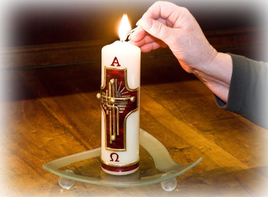
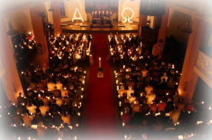

OsterkerzeZu den ältesten Traditionen, die an Ostern gefeiert werden, zählt vermutlich die Osterkerze, die in der Nacht vom Karsamstag auf den Ostersonntag vorwiegend in der Kirche entzündet wird. Sie steht für das Leben und begleitet den Gottesdienst der Christen bis Pfingsten. |
 |
|  |
OsternachtDie Osternacht, die vom Karsamstag auf den Ostersonntag stattfindet, wird in der Kirche als die "Nacht der Nächte" gefeiert. Nach Einbruch der Dunkelheit feiern Christen in der Osternacht ihre wichtigste Messe des ganzen Jahres. |
OsterspaziergangAm Ostersonntag oder Ostermontag brechen viele Familien auf einen Osterspaziergang in die Natur aus. Der Ausflug soll dazu dienen, dass die Familie sich besinnt, gemeinsam Zeit verbringt und den anstehenden Frühling willkommen heißt. |
Osterspaziergang |
||
| Vom
Eise befreit sind Strom und Bäche, Durch des Frühlings holden, belebenden Blick, Im Tale grünet Hoffnungsglück; Der alte Winter, in seiner Schwäche, Zog sich in rauhe Berge zurück. Von dorther sendet er, fliehend, nur Ohnmächtige Schauer körnigen Eises In Streifen über die grünende Flur; Aber die Sonne duldet kein Weisses, Überall regt sich Bildung und Streben, Alles will sie mit Farben beleben; Doch an Blumen fehlts im Revier, Sie nimmt geputzte Menschen dafür. |
Kehre
dich um, von diesen Höhen Nach der Stadt zurück zu sehen. Aus dem hohlen finstern Tor Dring ein buntes Gewimmel hervor. Jeder sonnt sich heute so gern. Sie feiern die Auferstehung des Herrn, Denn sie sind selber auferstanden, Aus niedriger Häuser dumpfen Gemächern, Aus Handwerks- und Gewerbes Banden, Aus dem Druck von Giebeln und Dächern, Aus Strassen quetschender Enge, Aus der Kirchen ehrwürdiger Nacht Sind sie alle ans Licht gebracht. |
Sieh
nur sieh! wie behend sich die Menge Durch die Gärten und Felder zerschlägt, Wie der Fluss, in Breit' und Länge, So manchen lustigen Nachen bewegt, Und, bis zum Sinken überladen Entfernt sich dieser letzte Kahn. Selbst von des Berges fernen Pfaden Blinken uns farbige Kleider an. Ich höre schon des Dorfs Getümmel, Hier ist des Volkes wahrer Himmel, Zufrieden jauchzet gross und klein: Hier bin ich Mensch, hier darf ichs sein. |
| Johann
Wolfgang von Goethe, 1749-1832, deutscher Dichter, Schriftsteller und Naturforscher Aus: Osterspaziergang, Faust, die Tragödie erster Teil |